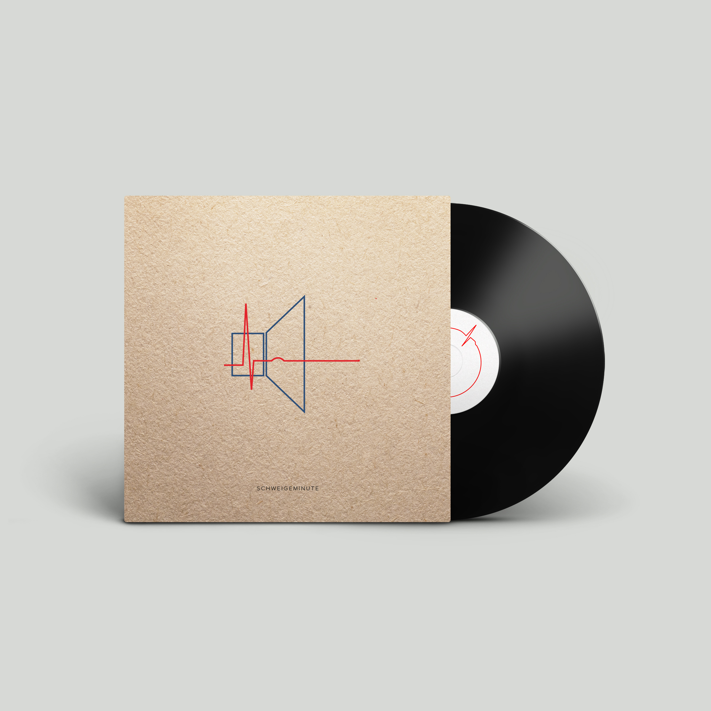

<html lang="en-us"></html>
<head>
  <meta charset="utf-8"/>
  <meta http-equiv="X-UA-Compatible" cntnt="IE=edge"/>
  <title>Preview Landing Page</title>
  <meta name="viewport" cntnt="width=device-width, initial-scale=1, user-scalable=0, maximum-scale=1.0"/>
  <meta name="Schweigeminute"/>
  <link rel="stylesheet" href="css/styles.css">
  <link href="https://fonts.googleapis.com/css2?family=Exo:wght@500&display=swap" rel="stylesheet">
  <link href="https://fonts.googleapis.com/css?family=Roboto+Condensed&display=swap" rel="stylesheet">
  <script src="https://kit.fontawesome.com/e8668a677b.js" crossorigin="anonymous"></script>
</head>
<body>
<div class="fp-container">

    <div class="txt-container">
    <button onclick="ddFunction()" class="dropbtn"><i class="fas fa-bars"></i></button>
    <div id="Dropdown" class="dropdown-content">
    <a href="html/media-archive.html" target="_blank">Media Archive</a>
    <a href="html/data.html" target="_blank">Data</a>
    <a href="html/contact.html" target="_blank">Contact</a>
  </div>
     <h1>One Minute of Silence Revisited</h1>
     <p>During the European refugee crisis 2015, Vienna based artist Raoul Haspel created "One Minute of Silence (Traiskirchen)": 60 seconds of silent protest against the infamous refugee camp in Traiskirchen (Lower Austria). The piece was sold via iTunes, performed live at concerts and demonstrations, and made the headlines in international news.</p>
     <p>Five years later, we are launching a research project into its context and the factors that led to the project's success. To achieve this, we will be working with an extensive archive of documentary material and utilize some cutting edge methods of Big Data analysis.</p>
     <p>On this page, we are presenting a sneak peek into some of the material of the <a href="html/media-archive.html" target="_blank">media archive</a> and the <a href="html/data.html" target="_blank">data we will be working with.</a> If you have any additional questions, don't hesitate to <a href="html/contact.html" target="_blank">contact a member of the project team.</a></p>
    </div>
</div>
<script>
function ddFunction() {
  document.getElementById("Dropdown").classList.toggle("show");
}

window.onclick = function(event) {
  if (!event.target.matches('.dropbtn')) {
    var dropdowns = document.getElementsByClassName("dropdown-content");
    var i;
    for (i = 0; i < dropdowns.length; i++) {
      var openDropdown = dropdowns[i];
      if (openDropdown.classList.contains('show')) {
        openDropdown.classList.remove('show');
      }
    }
  }
}
</script>
</body>
